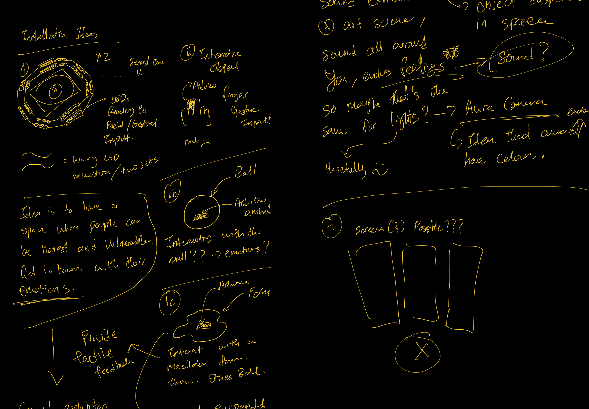

// Semester Two Week Two: 17.01.22 - 21.01.22
Graduation Project:
// 19.01.22 - CiDLab Consultation with Andreas Schlegel.
// 20.01.22 - Design Brief Consultation with Vikas Kailankaje.
// 21.01.22 - Initial Ideas for Installation.
// 08.09.21 - CiDLab Consultation with Andreas Schlegel.
After going to a bunch of exhibitions and working on an installation, I think I'm currently riding this art week high and decided that for this semester I wanted to work on an installation piece. After spending so much time last semester looking at things from a technical and scientific viewpoint, I realised that I just really wanted to have some fun with this.
I spent so much, so much time trying to figure out where did I want to go with this project. Did I want to make an object? Would that object exist on a table? In a space? In what context? While working? While hanging out with friends virtually? Did I want to make something to save the world? Save my friends that were going through emotional issues? Mental Health? Could it be an aid for therapist? Could it replace certain existing things? Can I change how people communicate? Am I capable of doing something like that? But none of those really clicked and there was always this weird feeling of like trying to get things to fit and work out but it just felt wrong, like forcefully trying to put things together eventually something will break. That something being me.
But after the break and checking out so many cool art and design installations / exhibitions. This finally felt right. I think the issue was just me trying to be as practical and serious about it as I could be. But somewhere along the lines I just forgot to have fun with it. I started this project because I wanted to make cool things (as mentioned in my presentation in S1W1) besides my general interest in the subject matter, I think in the pursuit of cool things, things got too real and too uncool. So it's time to stop taking things too seriously and bring back that spirit of having fun and make something cool.
// End of this Section.
// 20.01.22 - Design Brief Consultation with Vikas Kailankaje.
// 21.01.22 - Initial Ideas for Installation.
Ok so, here's where things get crazy (or atleast I hope it does, dream big right?). Ok so the first idea was to create a multi-sensory experience. Actually all the ideas are kind of multi-sensory experiences, but just wit slightly different formats. I think for me, I really was largely influenced and impacted by the Rhizomatiks experience from Videogames Transformed. They all have two elements to them, an object + a sensor. And just the idea that it's all around you creating this immersive experience.
So talking to Andreas about it and we both agreed that I should stick to using LED lights for the output of the installation. Firstly cause I was lucky to have some experience (as mentioned before when I said I work on an iteration of Oort Cloud for SAW 2022), also because the execution would be more manageable compared to using things like projectors. The idea was for me to flip the scientific approach that I was using for Dissertation and somehow make it more design and experience. Which is sort of the point of Affective Presence which was one of the concepts I was exploring in my dissertation.
Image: Sketches of some initial thoughts on how the installation could be like.
// End of this Section.
// End of the Week